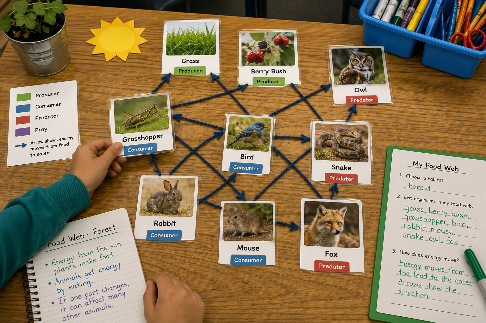

Keep this question in mind as you build your own food web today. By the end, you should be able to answer it with real evidence from your work.
Picture a forest in your head. There's grass, a few berry bushes, a rabbit munching, a bird in the sky, and a fox sneaking through the trees. Each one of those living things is connected to another in some way. Before we build a model of those connections, take a minute to think.
You don't need to know everything yet. Just start somewhere. Today you'll build a much bigger model called a food web — and your first ideas are a great place to start.
Before you start building, learn the words you'll use today. Tap each card to flip it and read what the word means. You'll see these words all over the investigation.
Copy this sentence carefully into your science notebook:
"Energy moves from the sun to plants, then to animals that eat the plants, and then to animals that eat those animals."

A food chainfood chainA simple line showing one path of energy from one living thing to the next. shows one path of energy. For example: grass → rabbit → fox.
But most animals don't eat only one thing. A food web shows many food chains all connected. A rabbit eats grass and berries. A fox eats rabbits and mice. That's a web.
Almost all the energy in a food web starts with the sun. Producers like grass and berry bushes use sunlight to make their own food.
Consumers can't make their own food. They get energy by eating producers — or by eating other consumers. The arrows in a food web point from the food to the eater. Arrows show which way the energy is moving.
A habitat has to give an animal what it needs: food, water, shelter, space, and the right weather. If a habitat is missing any of those, some animals can't survive there.
That's why a fish does well in a pond but not in a desert, and a cactus does well in a desert but would rot in a swamp. The food web only works when the habitat fits.
Real-World Connection: If a pond dries up, the frogs and fish there have a real problem — their food web falls apart because the habitat changed.
A food web shows how energy moves through living things in a habitat. Arrows always point from the food to the eater.
When a habitat changes, the food web changes too — and some animals may not be able to survive there anymore.
Curious? Go Deeper
What happens when one part of the web disappears? Imagine the rabbits in a forest got sick and most of them died one summer. The foxes that ate them would have a much harder time finding food. Some foxes might move away. Some might starve. But the grasses and berries that the rabbits used to eat might grow much bigger because nothing is eating them.
This is why scientists call a food web a system. Pull on one thread and the whole web shakes a little. Real scientists who study wolves, beavers, or sea otters have seen this happen — when one animal returns to or disappears from a place, the whole web changes around it.
Try this: pick one animal in your food web and pretend it disappeared. What changes? Who's hungry now? Who has too much food? That's how scientists think.
You'll need: a blank sheet of paper or 8 index cards, a pencil, colored pencils, and yarn or string (or you can just draw arrows). You may also use animal pictures cut from old magazines.
Work through the steps below. Take your time on Step 4 — that's where your thinking really counts.
Pick a habitat. Choose one: pond, forest, desert, grassland, or ocean. Write the habitat name at the top of your paper.
List your living things. Pick at least 6 organisms that live in that habitat — at least 2 producers, at least 3 consumers, and at least 1 predator. Draw or write each one on the page.
Draw the arrows. Add arrows showing who eats who. Each arrow points from the food to the eater. Label each organism as producer, consumer, or predator.
Test the habitat. Pick one animal from your web. Imagine moving it to a totally different habitat (a forest rabbit dropped into a desert, for example). Would it survive well, less well, or not at all? Get ready to explain why.
In your science notebook, record what you found. Be specific — name your habitat, your animals, and what you noticed.
Tell the story of your food web. Start with the sun. Walk through where the energy goes next — and next — and next. Use your notes to help you.
Think through each question on your own. Write your answers in your science notebook before moving on.
🔍 Part A — Sort and Label
For each living thing below, write whether it is a producer, a consumer, or a predator. Use your notebook.
🚀 Part B — Short Answer
Answer each question in complete sentences. Use your science vocabulary!
Pick one animal from your food web. Explain why it survives well in your habitat — and why it would have a hard time surviving in a different habitat.
What do you think?
💡 Start with: "I think my [animal] can survive in [habitat] but not in [other habitat] because…"
What evidence from your food web shows this?
💡 Start with: "In my food web, I noticed that…"
Why does that make sense?
💡 Start with: "This makes sense because every habitat has to give animals…"
📚 Try to use at least one of these words in your answer: food web, habitat, energy flow
🎨 Part C — Draw & Label
Make a clean copy of your food web on a fresh page. Include at least 6 living things (2 producers, 3 consumers, 1 predator). Add arrows showing energy flow and label every organism.
Submit your work on Canvas using one of these options:
Make sure your submission includes all of these: